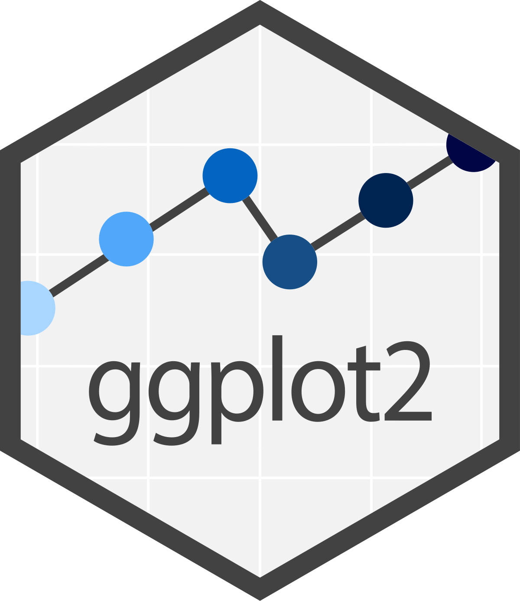

#instalando pacote ggplot2
install.packages("ggplot2")
#instalando dplyr, forcats e patchwork
install.packages("dplyr")
install.packages("forcats")
install.packages("patchwork")Introdução ao ggplot2
Introdução
O ggplot2 é um pacote de código aberto para a visualização gráfica de dados para a linguagem de programação R. Foi criada por Hadley Wickham em 2005 (Wickham 2016), sendo uma implementação do livro Grammar Graphics de Leland Wilkison também lançado em 2005 (Wilkinson 2011).
Ele aborda que visualização gráfica dos dados pode ser divida em componentes semânticos, como escalas e camadas.

Por que usar o ggplot2?
Alta costumização gráfica.
Alta diversidade de modelos de gráficos.
Integração com outros pacotes do tidyverse, como por exemplo
dplyr(Wickham et al. 2023),forcats(Wickham 2023) e oplotly(Sievert 2020).Criação de gráficos a partir de camadas, podendo sobrepor diferentes gráficos.
Como instalar o ggplot2?
Para usar o ggplot2 em seus scripts tem que carrega-lo
#Carregando o pacote ggplot2
library(ggplot2)
#Carregando dplyr, forcats e patchwork
library(dplyr)
library(forcats)
library(patchwork)Banco de dados iris
Para essa oficina será utilizado bancos de dados iris.
iris - é referente tamanho de pételas e sepalas de 3 espécies do gênero Iris do trabalho de Fisher em 1936 (Iris setosa,Iris versicolor e Iris virginica)
data(iris)| Sepal.Length | Sepal.Width | Petal.Length | Petal.Width | Species |
|---|---|---|---|---|
| 5.1 | 3.5 | 1.4 | 0.2 | setosa |
| 4.9 | 3.0 | 1.4 | 0.2 | setosa |
| 4.7 | 3.2 | 1.3 | 0.2 | setosa |
| 4.6 | 3.1 | 1.5 | 0.2 | setosa |
Box-plot
iris%>%ggplot(aes(x=Species, y=Petal.Length))+
geom_boxplot()
Gráfico violino
ggplot(iris, aes(x=Species,y=Sepal.Width, fill=Species))+
geom_violin()
Histograma
ggplot(iris,aes(x=Sepal.Width))+
geom_histogram(bins=10, color="black",
fill="white")+
labs(y="Frequência", x="Largura de Sépala")
ggplot(iris,aes(x=Sepal.Width))+
geom_histogram(bins=11, color="black",
fill="white")+
labs(y="Frequência", x="Largura de Sépala")+
scale_x_continuous(n.breaks = 11)
Polígono
ggplot(iris,aes(x=Sepal.Width))+
geom_freqpoly(bins=11, color="black")+
labs(y="Frequência", x="Largura de Sépala")+
scale_x_continuous(n.breaks = 11)
ggplot(iris,aes(x=Sepal.Width))+
labs(y="Frequência", x="Largura de Sépala")+
scale_x_continuous(n.breaks = 11)+
geom_histogram(bins=11, color="black",
fill="white")+
geom_freqpoly(bins=11, color="blue")
ggplot(iris,aes(x=Sepal.Width))+
labs(y="Frequência", x="Largura de Sépala")+
scale_x_continuous(n.breaks = 11)+
geom_histogram(bins=11, color="black",
fill="white")+
geom_freqpoly(bins=11, color="blue")+
facet_grid(~Species)
ggplot(iris,aes(x=Sepal.Width))+
labs(y="Frequência", x="Largura de Sépala")+
scale_x_continuous(n.breaks = 11)+
geom_histogram(bins=11, color="black",
fill="white")+
geom_freqpoly(bins=11, color="blue")+
facet_grid(Species~.)
Gráfico de densidade
ggplot(iris,aes(x=Sepal.Width))+
geom_density(color="black", fill="white")+
labs(y="Frequência", x="Largura de Sépala")
Gráfico de barras de frequência
iris%>%ggplot(aes(x=Species))+
geom_bar()
iris%>%group_by(Species)%>%
summarise(count=n())%>%
ggplot(aes(x=Species, fill=Species, y=count))+
geom_col(color="black")
Gráfico de pizza
iris%>%group_by(Species)%>%
summarise(count=n()/150*100)%>%
ggplot(aes(x=" ", fill=Species, y=count))+
geom_col(color="black")+
coord_polar(theta="y")+
theme_void()
iris%>%group_by(Species)%>%
summarise(count=round(n()/150*100, 2))%>%
ggplot(aes(x=" ", fill=Species, y=count))+
geom_col(color="black")+
coord_polar(theta="y")+
geom_label(aes(label = count),
position = position_stack(vjust = 0.5),
show.legend = FALSE)+
theme_void()
Gráfico de pontos
ggplot(iris,aes(x=Sepal.Length, y=Sepal.Width))+
geom_point()
ggplot(iris,aes(x=Sepal.Length, y=Sepal.Width,
color=Species, shape=Species))+
geom_point()
ggplot(iris,aes(x=Sepal.Length, y=Sepal.Width,
color=Species, shape=Species))+
geom_point()+
geom_smooth(se=FALSE, method="lm")`geom_smooth()` using formula = 'y ~ x'
ggplot(iris,aes(x=Sepal.Length, y=Sepal.Width, color=Species,
shape=Species))+
geom_point()+
geom_smooth(se=FALSE, method="lm")+
coord_flip()`geom_smooth()` using formula = 'y ~ x'
Gráfico de barras (média e desvio)
iris%>%group_by(Species)%>%
summarise(mean=mean(Sepal.Length),
sd=sd(Sepal.Length),
se=sd(Sepal.Length)/sqrt(length(Sepal.Length)))%>%
ggplot(aes(x=Species, y=mean))+
geom_col()+
geom_errorbar(aes(ymin=mean-sd,ymax=mean+sd), width=0.5)+
labs(y="Comprimento da Sepala", x="Espécies")+
theme_bw()+
scale_y_continuous(limits=c(0,10))
iris%>%group_by(Species)%>%
summarise(mean=mean(Sepal.Length),
sd=sd(Sepal.Length),
se=sd(Sepal.Length)/sqrt(length(Sepal.Length)))%>%
ggplot(aes(x=Species, y=mean))+
geom_col()+
geom_linerange(aes(ymin=mean-sd,ymax=mean+sd))+
labs(y="Comprimento da Sepala", x="Espécies")+
theme_bw()+
scale_y_continuous(limits=c(0,10))
iris%>%group_by(Species)%>%
summarise(mean=mean(Sepal.Length), sd=sd(Sepal.Length),se=sd(Sepal.Length)/sqrt(length(Sepal.Length)))%>%ggplot(aes(x=Species, y=mean))+geom_col()+geom_pointrange(aes(ymin=mean-sd,ymax=mean+sd))+labs(y="Comprimento da Sepala", x="Espécies")+theme_bw()+scale_y_continuous(limits=c(0,10))
O exemplo abaixo é sem a coluna, apenas o geom_linerange.
iris%>%group_by(Species)%>%summarise(mean=mean(Sepal.Length), sd=sd(Sepal.Length),se=sd(Sepal.Length)/sqrt(length(Sepal.Length)))%>%ggplot(aes(x=Species, y=mean))+geom_linerange(aes(ymin=mean-sd,ymax=mean+sd))+labs(y="Comprimento da Sepala", x="Espécies")+theme_bw()+scale_y_continuous(limits=c(0,10))
Alterando escalas, cores, fontes e temas
Ajustando escalas no ggplot
Retornamos com o gráfico de barra com a média e as barras de desvio. Para ajustar a escala de algum elemento gráfico no ggplot o comando inicia scale_[parâmetro]_[característica do parâmetro ou tipo de função aplicada](). No caso abaixo foi utilizado o scale_y_continuous(), já que ajustaremos a escala do eixo y, sendo ela uma variável contínua. Dentro da função colocaremos o seguinte agumento limits=c(0,10), onde zero é o limite inferior e o 10 o limite superior.
iris%>%group_by(Species)%>%summarise(mean=mean(Sepal.Length), sd=sd(Sepal.Length),se=sd(Sepal.Length)/sqrt(length(Sepal.Length)))%>%ggplot(aes(x=Species, y=mean))+geom_col()+geom_errorbar(aes(ymin=mean-sd,ymax=mean+sd), width=0.5)+labs(y="Comprimento da Sepala", x="Espécies")+theme_bw()+scale_y_continuous(limits=c(0,10))
#exemplo com a escala maior
iris%>%group_by(Species)%>%summarise(mean=mean(Sepal.Length), sd=sd(Sepal.Length),se=sd(Sepal.Length)/sqrt(length(Sepal.Length)))%>%ggplot(aes(x=Species, y=mean))+geom_col()+geom_errorbar(aes(ymin=mean-sd,ymax=mean+sd), width=0.5)+labs(y="Comprimento da Sepala", x="Espécies")+theme_bw()+scale_y_continuous(limits=c(0,20))
Ordenando variáveis ordinais no ggplot
Em um data frame podemos ter variáveis ordinais, que em uma visualização gráfica não faz sentido que elas não sejam apresentadas na ordem correta. Então usaremos o pacote forcats para isso. Aqui ire gerar um data frame hipotético da frequência da escolaridade dos entrevistados de uma pesquisa,
Nesse primeiro modelo, note que a escolaridade não está seguindo a sequência correta. Já que o R por padrão ordena por ordem alfabética.
Escolaridade<-c(rep("Graduação", 42), rep("Médio", 30), rep("Fundamental", 20))
Escolaridade<-as.data.frame(Escolaridade)
Escolaridade%>%ggplot(aes(x=Escolaridade))+geom_bar()+labs(y="Frequência", x="Escolaridade")
Nesse próximo isso é corrigido pelo comando mutate(Escolaridade=fct_relevel(Escolaridade,"Fundamental","Médio", "Graduação")). A função mutate() serve para fazer alterações no data frame, como mudar nome, ordem, características, entre outros. Dentro dela colocamos o argumento Escolaridade=fct_relevel(Escolaridade,"Fundamental","Médio","Graduação"), o fct_relevel() é a função que atua na reordenação, dentro dela colocamos Escolaridade pois é a que queremos ordenar, depois colocamos qual é a ordem que queremos "Fundamental", "Médio", Graduação", e toda essa alteração será armazenado em Escolaridade.
Escolaridade%>%mutate(Escolaridade=fct_relevel(Escolaridade,"Fundamental","Médio", "Graduação"))%>%ggplot(aes(x=Escolaridade))+geom_bar()+labs(y="Frequência", x="Escolaridade")
Mudando cores de preenchimento no ggplot
Uma das formas de acrescentar cor ao gráfico é adicionando o argumento fill dentro da função aes(). Indicará ao ggplot que você quer que as cores de preenchimentos do ggplot mude de acordo com alguma variável de seu data frame.
iris%>%ggplot(aes(x=Species, y=Petal.Length, fill=Species))+geom_boxplot()
Há várias maneiras de fazer isso, irei demonstrar algumas ao longo da oficina.
Por exemplo na linha de código abaixo foi acrescentado o argumento fill dentro da função geom_boxplot().Nesse argumento usei a função de contatenar (c()), para denominar as três cores desejadas para o gráfico. Note que os nomes das cores estão escritos entre aspas ““. Ao invés de colocar nome de cores em inglês, pode-se colocar o código RGB hexadecimal da cor, como #4287f5.
Atenção se queremos que as cores sejam diferenciadas de acordo com algum fator, ou variável nominal de nosso data.frame, temos que indicar dentro do aes(). Como fill para mudar o preenchimento, colour para mudar o contorno, e shape para mudar formato (caso esteja trabalhando com gráficos possuem pontos).
Note: quando colocamos as cores escolhidas dentro da forma geométrica (geom_), não será gerado legenda.
iris%>%ggplot(aes(x=Species, y=Petal.Length))+geom_boxplot(fill=c("lightpink","lightgreen","lightblue"))
A outra forma é delimitar através da função scale_fill_manual(), esse comando serve para alterar os parâmetros de fill. Nele foi utilizado values = c() para concatenar as cores escolhidas.
iris%>%ggplot(aes(x=Species, y=Petal.Length, fill=Species))+geom_boxplot()+scale_fill_manual(values=c("#704c41","#41704f","#584170"))
Mudando cores de contorno no ggplot
O mesmo processo poderia ser feito igual ao fill, porém utilizando o comando color. Esse paramêtro também pode ser utilizado para diferenciar algunciar algum fator do data frame, apenas colocando dentro do aes(color="coluna do data.frame"). Nesse caso foi colocado dentro da função geom_boxplot(), e coloquei o contorno do boxplot na cor marrom.
iris%>%ggplot(aes(x=Species, y=Petal.Length, fill=Species))+geom_boxplot(fill=c("lightblue","lightgreen","lightpink"), color="brown")
Alterando elementos textuais no ggplot
Os nomes dos eixos são alterados pela função labs, onde você indica qual elemento gráfico você quer renomear. Lembre-se: o nome que você quer renomear tem que estar entre aspas ” “.
- y para alterar o título do eixo y.
- x para alterar o título do eixo x.
- title para alterar o título ou acrescentar um título.
- subtitle para alterar o subtítulo ou acrescentar um subtítulo.
- fill para alterar o título da legenda referente ao fator colocado no fill.
- color para alterar o título da legenda referente ao fator colocado no color.
- shape para alterar o título da legenda referente ao fator colocado no shape.
- size para alterar o título da legenda referente ao fator colocado no size.
#| echo: true
iris%>%ggplot(aes(x=Species, y=Petal.Length, fill=Species))+geom_boxplot(fill=c("lightblue","lightgreen","lightpink"), color="brown")+labs(y="Comprimento de pétala", x="Espécies", title="Comparação de comprimento de pétalas", subtitle = "Banco de dados iris")
Alterando a fonte
Para alterar o tipo fonte do gráficos é necessário usar o pacote extrafont. Abaixo estará os comandos para instalar o pacote e carrega-lo.
# Instalando o pacote extrafont
install.packages("extrafont")
#Carregando o pacote extrafont
library(extrafont)
#Carregando as fontes presentes no computador
loadfonts(device="all")Aqui alteramos as fontes através do comando theme() este comando altera elementos temáticos do gráfico, como por exemplo fontes, tamanhos, cor de fundo, entre outros. Neste exemplo colocamons o argumento text = element_text(). Dentro dele vai alguns argumentos:
- face é para definir se a fonte estará em itálico (
"italic"), negrito ("bold") ou ambos ("italic.bold") - family é para definir se o tipo de fonte. Esse argumento pode ter variações de acordo com sistema operacional do computador. Em sistema windows pode-se utilizar
"TT Times New Roman","Arial", etc. Enquanto em sistemas Linux e MacOS estarão"serif","mono", etc. - size é para definir se o tamanho da fonte.
Obs.: esses elementos são importantes para garantir boa visualização gráfica e seguir padrões gráficos de publicações ou revistas.
iris%>%ggplot(aes(x=Species, y=Petal.Length, fill=Species))+geom_boxplot()+labs(y="Comprimento de pétala", x="Espécies")+theme(text = element_text(face="bold", family="serif"))
iris%>%ggplot(aes(x=Species, y=Petal.Length, fill=Species))+geom_boxplot()+labs(y="Comprimento de pétala", x="Espécies")+theme(text = element_text(face = "bold.italic", family="mono", size=16))
iris%>%ggplot(aes(x=Species, y=Petal.Length, fill=Species))+geom_boxplot()+labs(y="Comprimento de pétala", x="Espécies")+theme(text = element_text(face="italic"))
As vezes é necessário colocar nomes em itálico, como por exemplo nomes de espécies que estão no eixo x. Com isso dentro de theme() colocaremos o arguemento axis.text.x = element_text(face="italic") se referindo que estaremos trabalhando com o texto presente na escala do eixo x. Caso fosse no eixo y seria axis.text.y. Essa alteração também pode ser aplicada à outros parâmetros, como fill e color. Trabalhando assim, podemos alterar a fonte apenas daquele parâmetro.
iris%>%ggplot(aes(x=Species, y=Petal.Length, fill=Species))+geom_boxplot()+labs(y="Comprimento de pétala", x="Espécies")+theme(axis.text.x = element_text(face="italic"))
A seguir há o exemplo de deixar o título em negrito com maior destaque, utilizando o argumento plot.title = element_text(face="bold")
iris%>%ggplot(aes(x=Species, y=Petal.Length, fill=Species))+geom_boxplot()+labs(y="Comprimento de pétala", x="Espécies", fill="Espécies", title="Aqui é o título")+theme(axis.text.x = element_text(face="italic"), plot.title = element_text(face="bold"))
Manipulação da legenda
Caso queremos tirar a legenda ou alterar a posição da legenda, utilizaremos o argumento legend.position =:
“none” para tirar a legenda
“top” para a legenda ficar em cima
“bottom” para a legenda ficar em baixo
“left” para a legenda ficar na esquerda
“right” para a legenda ficar na direita
iris%>%ggplot(aes(x=Species, y=Petal.Length, fill=Species))+geom_boxplot()+labs(y="Comprimento de pétala", x="Espécies", fill="Espécies", title="Aqui é o título")+theme(axis.text.x = element_text(face="italic"), plot.title = element_text(face="bold"), legend.position = "none")
iris%>%ggplot(aes(x=Species, y=Petal.Length, fill=Species))+geom_boxplot()+labs(y="Comprimento de pétala", x="Espécies", fill="Espécies", title="Aqui é o título")+theme(axis.text.x = element_text(face="italic"), plot.title = element_text(face="bold"), legend.position = "top")
iris%>%ggplot(aes(x=Species, y=Petal.Length, fill=Species))+geom_boxplot()+labs(y="Comprimento de pétala", x="Espécies", fill="Espécies", title="Aqui é o título")+theme(axis.text.x = element_text(face="italic"), plot.title = element_text(face="bold"), legend.position = "bottom")
iris%>%ggplot(aes(x=Species, y=Petal.Length, fill=Species))+geom_boxplot()+labs(y="Comprimento de pétala", x="Espécies", fill="Espécies", title="Aqui é o título")+theme(axis.text.x = element_text(face="italic"), plot.title = element_text(face="bold"), legend.position = "left", legend.text = element_text(face="italic"))
Anotação em gráfico
Também é possível fazer anotações em gráficos no ggplot2, como colocar linhas e anotações para destacar pontos interessantes.
No primeiro exemplo colocamos o geom_text para adicionar o texto. Os argumentos x e y são para delimitar onde vai ficar o nosso texto, label é para definir o que vai estar no texto (nunca se esqueça de colocar entre aspas " ").
iris%>%ggplot(aes(x=Species, y=Petal.Length, fill=Species))+geom_boxplot()+labs(y="Comprimento de pétala", x="Espécies", fill="Espécies", title="Aqui é o título")+theme(axis.text.x = element_text(face="italic"), plot.title = element_text(face="bold"), legend.position = "left", legend.text = element_text(face="italic"))+ geom_text(x = 2.5, y = 4, label = "Ponto importante", color = "red", face="bold")Warning in geom_text(x = 2.5, y = 4, label = "Ponto importante", color = "red",
: Ignoring unknown parameters: `face`
Aqui é um exemplo utilizando annotate, nele além de adicionar texto, você pode adicionar linhas. Como nesse caso colocamos uma linha vertical no gráfico utilizando o argumento "vline". Para colocar uma linha na horizontal é "hline". Para ser um texto se utiliza o argumento "text".
iris%>%ggplot(aes(x=Species, y=Petal.Length, fill=Species))+geom_boxplot()+labs(y="Comprimento de pétala", x="Espécies", fill="Espécies", title="Aqui é o título")+theme(axis.text.x = element_text(face="italic"), plot.title = element_text(face="bold"), legend.position = "left", legend.text = element_text(face="italic"))+ geom_text(x = 2.5, y = 4, label = "Ponto importante", color = "red")+ annotate("vline", x = 2, xintercept = 2, linetype = "dashed", color = "blue")Warning: `geom` must not be "vline".
ℹ Please use `geom_vline()` directly instead.Warning in annotate("vline", x = 2, xintercept = 2, linetype = "dashed", :
Ignoring unknown aesthetics: x
iris%>%ggplot(aes(x=Species, y=Petal.Length, fill=Species))+geom_boxplot()+labs(y="Comprimento de pétala", x="Espécies", fill="Espécies", title="Aqui é o título")+theme(axis.text.x = element_text(face="italic"), plot.title = element_text(face="bold"), legend.position = "left", legend.text = element_text(face="italic"))+ geom_text(x = 2.5, y = 4, label = "Ponto importante", color = "red")+annotate("text", x = 1, y = 3.5, label = "outro ponto", color = "blue")
Temas
O ggplot2 por padrão dispõe de alguns temas para utilizar nos gráficos, adicionando theme_, aparece as sujestões disponíveis do pacote. Através do comando theme(), pode-se editar o tema ou criar temas novos.
Abaixo está os temas disponíveis do pacote ggplot2.
default<-iris%>%ggplot(aes(x=Species, y=Petal.Length, fill=Species))+geom_boxplot(fill=c("lightblue","lightgreen","lightpink"), color="black")+labs(y="Comprimento de pétala", x="Espécies", title="Default")
classic<-iris%>%ggplot(aes(x=Species, y=Petal.Length, fill=Species))+geom_boxplot(fill=c("lightblue","lightgreen","lightpink"), color="black")+labs(y="Comprimento de pétala", x="Espécies", title="Classic")+theme_classic()
dark<-iris%>%ggplot(aes(x=Species, y=Petal.Length, fill=Species))+geom_boxplot(fill=c("lightblue","lightgreen","lightpink"), color="black")+labs(y="Comprimento de pétala", x="Espécies", title="Dark")+theme_dark()
bw<-iris%>%ggplot(aes(x=Species, y=Petal.Length, fill=Species))+geom_boxplot(fill=c("lightblue","lightgreen","lightpink"), color="black")+labs(y="Comprimento de pétala", x="Espécies", title="bw")+theme_bw()
minimal<-iris%>%ggplot(aes(x=Species, y=Petal.Length, fill=Species))+geom_boxplot(fill=c("lightblue","lightgreen","lightpink"), color="black")+labs(y="Comprimento de pétala", x="Espécies", title="Minimal")+theme_minimal()
gray<-iris%>%ggplot(aes(x=Species, y=Petal.Length, fill=Species))+geom_boxplot(fill=c("lightblue","lightgreen","lightpink"), color="black")+labs(y="Comprimento de pétala", x="Espécies", title="Gray")+theme_gray()
light<-iris%>%ggplot(aes(x=Species, y=Petal.Length, fill=Species))+geom_boxplot(fill=c("lightblue","lightgreen","lightpink"), color="black")+labs(y="Comprimento de pétala", x="Espécies", title="Light")+theme_light()
linedraw<-iris%>%ggplot(aes(x=Species, y=Petal.Length, fill=Species))+geom_boxplot(fill=c("lightblue","lightgreen","lightpink"), color="black")+labs(y="Comprimento de pétala", x="Espécies", title="Linedraw")+theme_linedraw()
void<-iris%>%ggplot(aes(x=Species, y=Petal.Length, fill=Species))+geom_boxplot(fill=c("lightblue","lightgreen","lightpink"), color="black")+labs(y="Comprimento de pétala", x="Espécies", title="Void")+theme_void()
default+classic+dark+bw+minimal+gray+light+linedraw+void
Unindo vários gráficos em uma imagem só
Em na seção do histograma vimos a função facet_grid ou facet_wrap, para ter gráficos separados de acordo a uma característica do data frame. Porém como colocamos ggplots lado a lado de diferentes data frame para uma única imagem? Há algumas opções, aqui irei mostrar utlizando o pacote patchwork,
Armazenar os ggplots em um objeto utilizando o comando
<-ou=, como mostra o exemplo abaixoEscrever os nomes do objetos colocar
+entre eles
#Criando ggplots
barra<-Escolaridade%>%mutate(Escolaridade=fct_relevel(Escolaridade,"Fundamental","Médio", "Graduação"))%>%ggplot(aes(x=Escolaridade))+geom_bar()+labs(y="Frequência", x="Escolaridade")
polígono<-iris%>%ggplot(aes(x=Sepal.Length))+geom_freqpoly()+labs(y="Frequência",x="Comprimento de Sépala")
boxplot<-iris%>%ggplot(aes(y=Sepal.Length, x=Species))+geom_boxplot()+labs(y="Comprimento de Sépala", x="Espécies")
pontos<-iris%>%ggplot(aes(x=Sepal.Length,y=Sepal.Width, color=Species))+geom_point()+labs(x="Comprimento de Sépala", y="Largura de Sépala", color="Espécies")
barra + polígono + boxplot + pontos`stat_bin()` using `bins = 30`. Pick better value with `binwidth`.
- Também é possível utilizar diferêntes conformações utilizando elementos matemáticos, como
/e().
(barra + polígono + boxplot)/ pontos`stat_bin()` using `bins = 30`. Pick better value with `binwidth`.
Extra
Mapas
#instalando o pacote raster e sf
install.packages("raster")
install.packages("sf")
#carregando o pacote raster e sf
library(raster)
library(sf)# Importando dados
prec<-raster("pelprec.tiff")
pel<-read_sf("Pelotas/Pelotas.shp")
# Convertendo raster para data frame para o ggplot processar o dado
prec_df<-as.data.frame(prec, xy = TRUE, na.rm = TRUE)
head(prec_df) x y pelprec
14 -52.49583 -31.32917 120
15 -52.48750 -31.32917 121
16 -52.47917 -31.32917 121
17 -52.47083 -31.32917 120
18 -52.46250 -31.32917 120
19 -52.45417 -31.32917 120ggplot(prec_df,aes(x=x,y=y,fill=pelprec))+geom_raster()
# Cores padrão
ggplot()+geom_raster(data=prec_df,aes(x=x,y=y,fill=pelprec))+geom_sf(data=pel,fill=NA, color="gray",linewidth=2, alpha=.01)+labs(title="Mapa da média anual da precipitação \n em Pelotas-RS entre 1970-2000", y="Latitude", x="Longitude", fill="Precipitação (mm)")+theme_bw()
ggplot()+geom_raster(data=prec_df,aes(x=x,y=y,fill=pelprec))+geom_sf(data=pel,fill=NA, color="gray",linewidth=2, alpha=.01)+labs(title="Mapa da média anual da precipitação \n em Pelotas-RS entre 1970-2000", y="Latitude", x="Longitude", fill="Precipitação (mm)")+theme_bw()+scale_fill_gradient(low="gray",high="blue")
ggplot()+geom_raster(data=prec_df,aes(x=x,y=y,fill=pelprec))+geom_sf(data=pel,fill=NA, color="gray",linewidth=2, alpha=.01)+labs(title="Mapa da média anual da precipitação \n em Pelotas-RS entre 1970-2000", y="Latitude", x="Longitude", fill="Precipitação (mm)")+theme_bw()+scale_fill_gradientn(colours = terrain.colors(10))
#intalando pacote viridis
install.packages("viridis")
#carregando pacote viridis
library(viridis)ggplot()+geom_raster(data=prec_df,aes(x=x,y=y,fill=pelprec))+geom_sf(data=pel,fill=NA, color="gray",linewidth=2, alpha=.01)+labs(title="Mapa da média anual da precipitação \n em Pelotas-RS entre 1970-2000", y="Latitude", x="Longitude", fill="Precipitação (mm)")+theme_bw()+scale_fill_viridis()
Temas divertidos
install.packages("remotes")
remotes::install_github("MatthewBJane/ThemePark")
library(ThemePark)iris%>%ggplot(aes(x=Species, y=Petal.Length, fill=Species))+geom_boxplot(fill=c(lordoftherings_theme_colors["light"],lordoftherings_theme_colors["medium"],lordoftherings_theme_colors["dark"]))+labs(y="Comprimento de pétala", x="Espécies", title= "Tema Senhor dos Anéis")+theme_lordoftherings()
iris%>%ggplot(aes(x=Species, y=Petal.Length, fill=Species))+geom_boxplot(fill=c(barbie_theme_colors["light"],barbie_theme_colors["medium"],barbie_theme_colors["dark"]))+labs(y="Comprimento de pétala", x="Espécies", title= "Tema Barbie")+theme_barbie()
iris%>%ggplot(aes(x=Species, y=Petal.Length, fill=Species))+geom_boxplot(fill=c(simpsons_theme_colors["light"],simpsons_theme_colors["medium"],simpsons_theme_colors["dark"]))+labs(y="Comprimento de pétala", x="Espécies", title= "Tema Simpsons")+theme_simpsons()
iris%>%ggplot(aes(x=Species, y=Petal.Length, fill=Species))+geom_boxplot(fill=c(friends_theme_colors["light"],friends_theme_colors["medium"],friends_theme_colors["dark"]))+labs(y="Comprimento de pétala", x="Espécies", title= "Tema Friends")+theme_friends()
iris%>%ggplot(aes(x=Species, y=Petal.Length, fill=Species))+geom_boxplot(fill=c(starwars_theme_colors["light"],starwars_theme_colors["medium"],starwars_theme_colors["dark"]))+labs(y="Comprimento de pétala", x="Espécies", title= "Tema Star wars")+theme_starwars()
Referências
Sievert, Carson. 2020. Interactive Web-Based Data Visualization with r, Plotly, and Shiny. Chapman; Hall/CRC. https://plotly-r.com.
Wickham, Hadley. 2016. Ggplot2: Elegant Graphics for Data Analysis. Springer-Verlag New York. https://ggplot2.tidyverse.org.
———. 2023. Forcats: Tools for Working with Categorical Variables (Factors). https://forcats.tidyverse.org/.
Wickham, Hadley, Romain François, Lionel Henry, Kirill Müller, and Davis Vaughan. 2023. Dplyr: A Grammar of Data Manipulation. https://dplyr.tidyverse.org.
Wilkinson, Leland. 2011. “The Grammar of Graphics.” In Handbook of Computational Statistics: Concepts and Methods, 375–414. Springer.